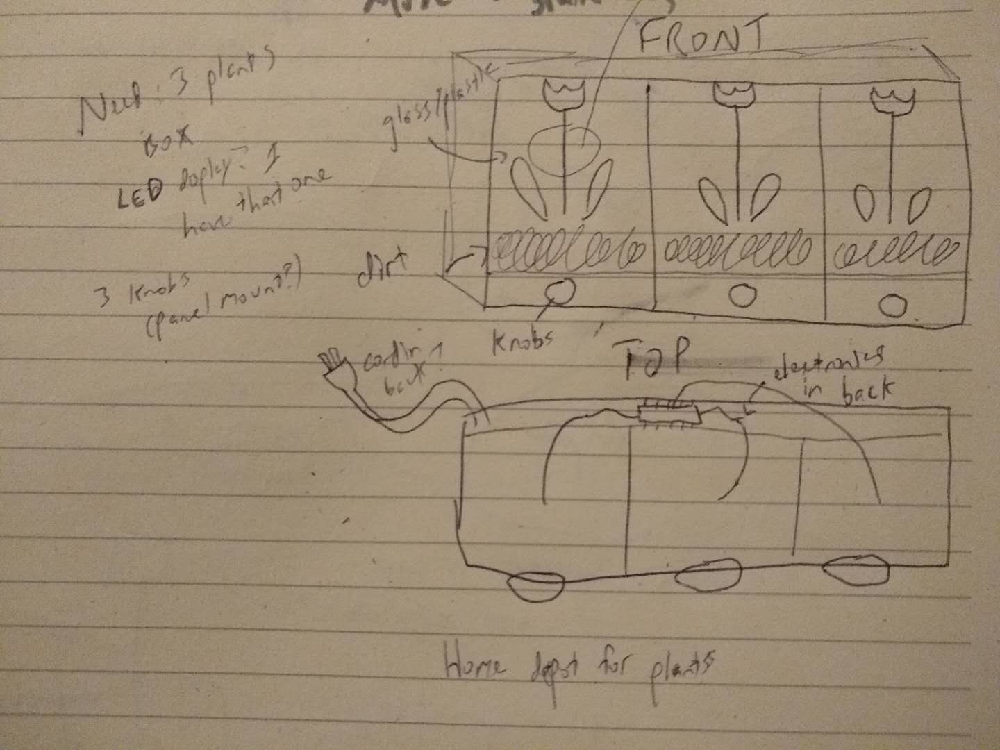

Ideation
During the depths of winter, many people suffer from ailments like SAD (Seasonal Affective Disorder) and a general lack of energy, which can be compounded by life in a dense city like New York without easy access to greenery. For our first assignment in device design, building a clock, I wanted to explore something that blended the industrial and the personal and helped to foster a personal connection with the devices we use.
With 'clock' as a starting point, I was reminded of the idea of a flower clock -- a hypothetical device where one could use flowers to tell time by measuring when the flowers opened and closed. The problem with flower clocks as described by Linnaeus is that... they don't really work. Nature is too finicky to open and close flowers by according to man-made rules. I realized, though, that though a flower clock may not be realizable, a clock with a flower is the perfect companion for those people who dread waking up on winter mornings.
Design Process
I knew right away that I wanted a time setting feature and an alarm feature for my plant clock, and as soon as I settled on the idea of incorporating flowers I also knew that I wanted tangible interaction with the greenery to be the main method of interaction.
Since I was working with organic materials, there were a few important considerations to take into account. The most obvious of these was water -- getting any of the electronics wet would result in a ruined project. There were also the number and type of plants to take into consideration. The plants had to be sturdy enough that they wouldn't mind being touched. Originally, I envisiond three separate plants separated by acrylic panels with the electronics in the back. Each plant would be dedicated to either hours, minutes or seconds.
However, once I got my hands on the materials and the plants I decided that, in order to keep things compact, a single plant would work better.
Materials
Three red arcade buttons from Tinkersphere (click here to view).
A four pin rocker switch, also from Tinkersphere (click here to view).
One 6" by 2" and one 6" by 6" bamboo drawer organizer from The Container Store (click here to view).
A plant and potting soil from Home Depot's gardening section.
Various wires and resistors, all linked back to an Arduino Nano on a solderless breadboard.
Construction
Making the plant-touching work required the use of Arduino's CapSense library, which is phenomenally easy to use. Just by putting a wire into the soil of the plant, I could detect when someone was touching it.
With the capsense figured out, I needed to decide on how I would change the time. I bought three arcade buttons from Tinkersphere, one to use as hours, one to use as minutes, and one to use as seconds. I also bought a rocker switch since I wanted my flower clock to have both a time set and an alarm function.
I organized my materials so that the electronics sat in the smaller bamboo organizer above the potted plant, since I didn't want any water to get on my microcontroller or buttons ans ruin them. I needed to fabricate a control panel for the buttons and rocker switch, which took a lot of tries prototyping on cardboard because the dimensions of the rocker switch were off on the Tinkersphere site. Once I had all the dimensions down correctly, I put the panel mount elements of my control panel in and soldered wires to them all.
After that, all that remained was putting the pieces together. I put the microcontroller inside the smaller box, drilled a small hole through the bottom so the wire could go into the plant soil, drilled another hole into the side so the micro-USB could go through, and after attaching the control panel to the microcontroller I screwed it all in. Then I spread some potting soil on the bottom layer and put my plant in!


Next Steps
Installation of an LED matrix screen is the next step for this project, since currently the time is only outputted to the computer. Additionally, a better drainage system for the plant would result in a better outcome for the greenery long term, although the design of the clock means that the plant could be easily swapped out as needed. If it were taken commercial, I could easily see different designs on containers with different plants inside each.
Comments? Questions? Concerns? Email me here!